In this documentation, we will use this UML model to illustrate the search features.
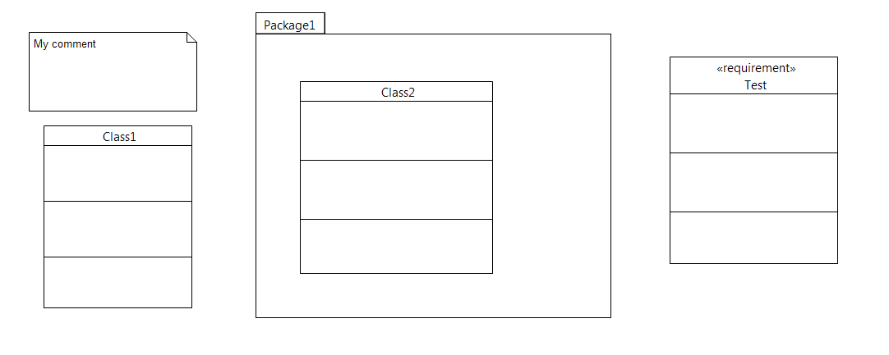
The search feature of Papyrus helps the user to find elements in the models. The user can choose between a text search and an OCL search.
As it is shown in the following image the user chooses the query kind he wants to use:
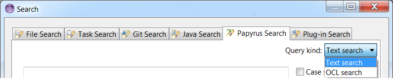
The user can do a simple search or an advanced search. The user makes his choice in the A area of the following image which represents the text search dialog.
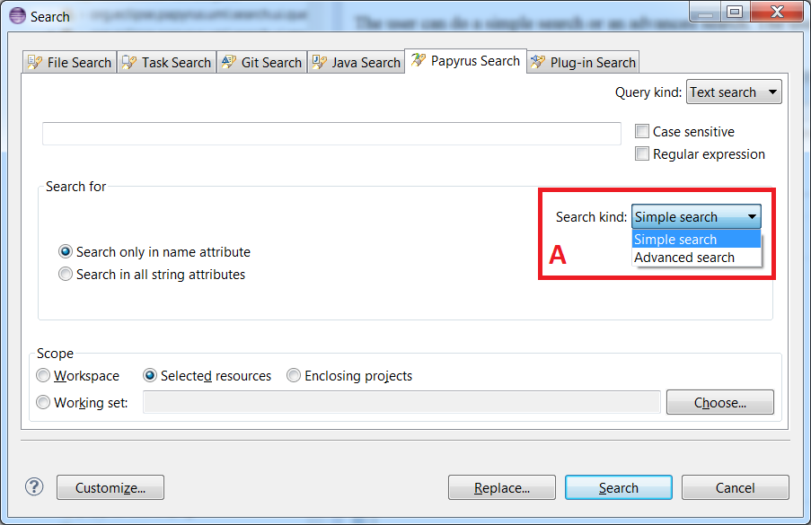
The following image illustrates a simple text search dialog:
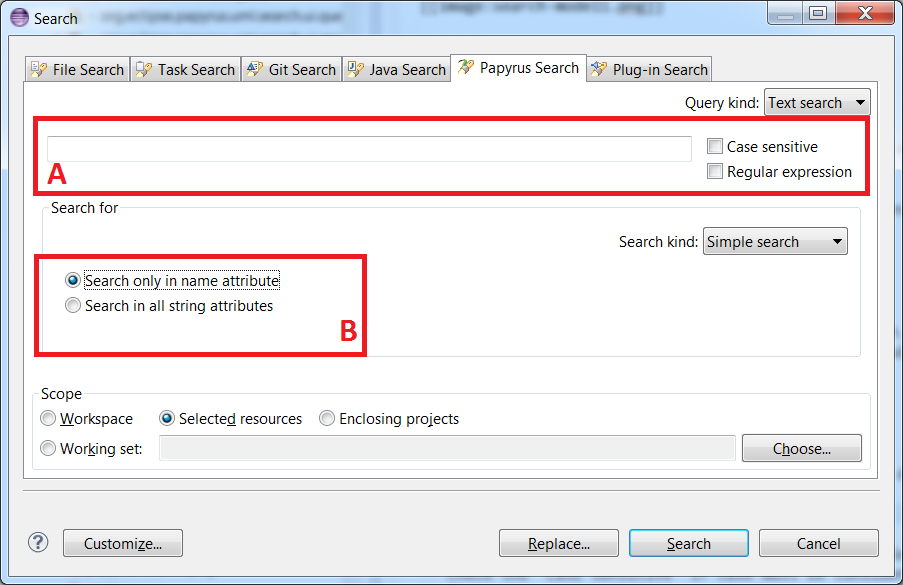
For instance, the following search:
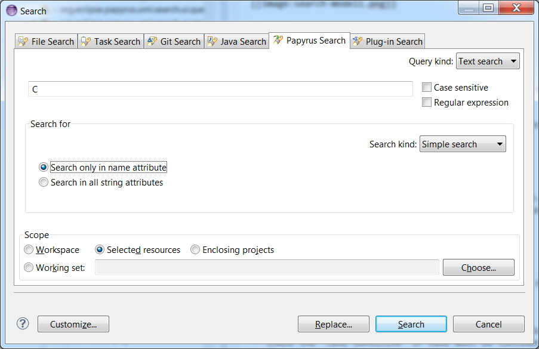
will provide the following results:
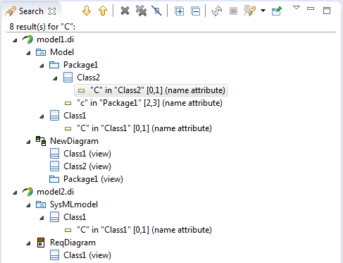
The comment is not returned because we were note looking for all string attributes.
However, this search:
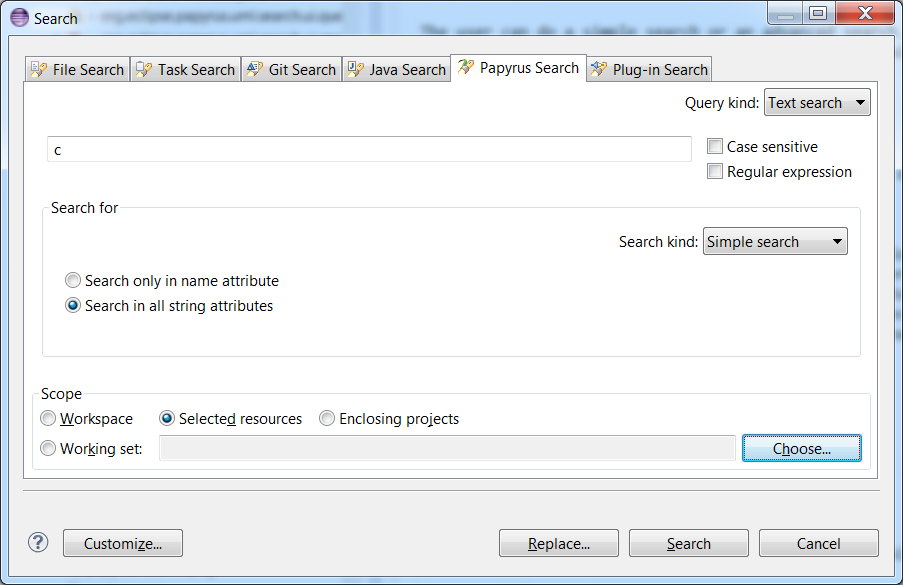
will return :
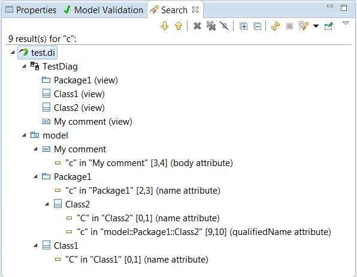
The following image shows the advanced text search dialog.
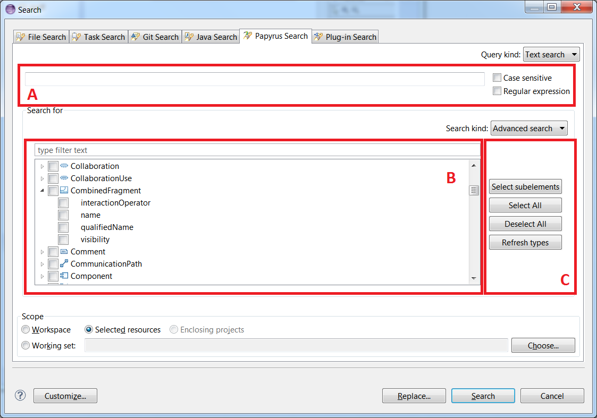
In the following image we search the pattern "my" in the attribute body of the metaClass "Comment". The research will give us all the instances of "Comment" having an attribute body matching with the string pattern.
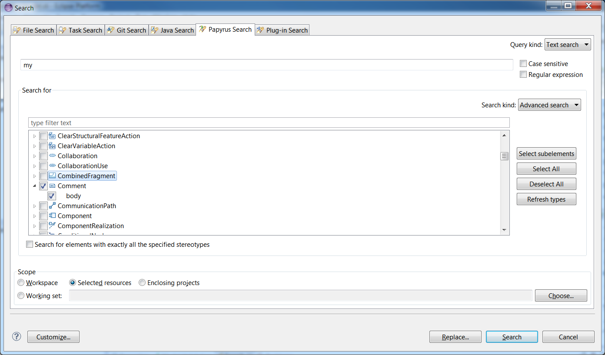
The result will be
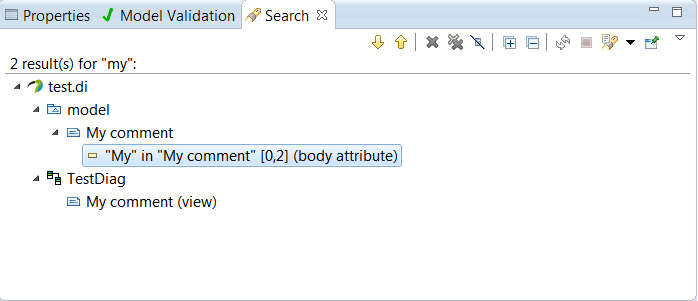
If the user select a stereotype or an UML metaClass without indicating a string pattern, the research will give him all the instances of the metaClasses he checked and all the elements having the applied stereotypes he checked.
For example the result of this research:
will be
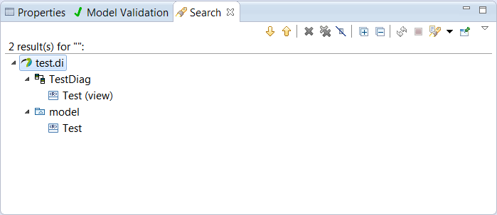
The following image shows an OCL search dialog
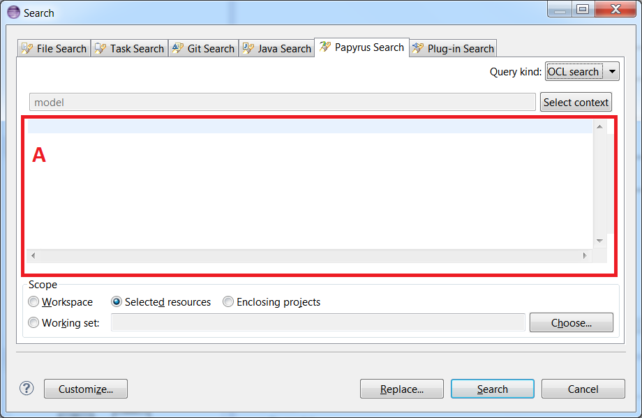
The user writes his OCL query in the A area. The scope must be "Selected resources" if the user wants to do this kind of query.
Should the user want to replace the matches of your search with another string, he/she may click on the "Replace" button in the search dialog. A new dialog will popup:
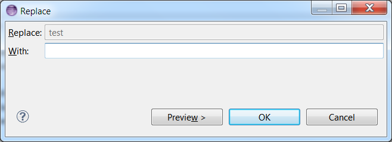
More details about the refactoring tool in the Model Refactor Wizard page.
The user can filter the results of the search by selecting the types of the elements he/she wants to show.
For instance, on the following search (we use the model 1):
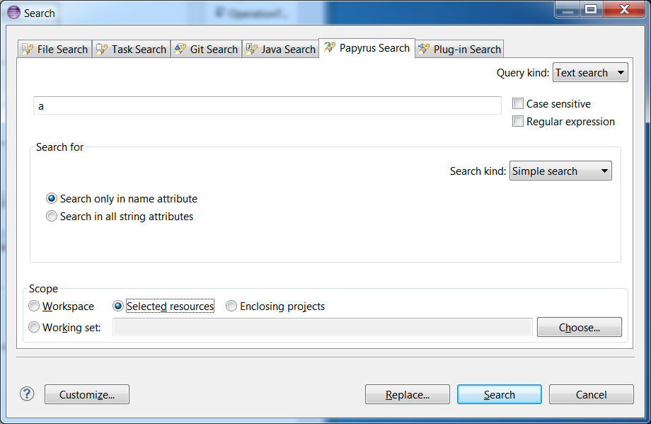
the user may filter the results by clicking on the icon identified in a red rectangle in the following picture:
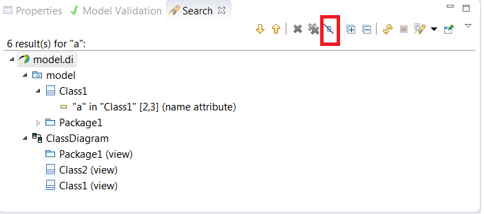
this will open a new dialog where the user can select the metaclasses he/she want to show:
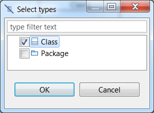
then, the result page will show only the matches of the selected type:
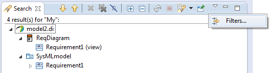
If the user wants to remove this filtering, he/she may click on the Filters button as illustrated in previous picture. This will open the following dialog: